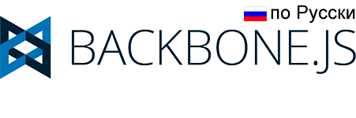

Backbone.js придает структуру веб-приложениям с помощью моделей с биндингами по ключу и пользовательскими событиями, коллекций с богатым набором методов с перечислимыми сущностями, представлений с декларативной обработкой событий; и соединяет это все с вашим существующим REST-овым JSON API.
Проект размещается на GitHub, с доступным аннотированным исходным кодом, с онлайновыми тестами с примером приложения, со списком туториалов и списком реальных проектов, которые используют Backbone. Backbone доступен под лицензией MIT.
Русская версия документации размещается на GitHub.
Оставляйте баг-репорты и обсуждайте фичи в багтрекере на GitHub'е, на IRC-канале Freenode #documentcloud, задавайте вопросы в группу Google, добавляйте страницы в вики, или шлите твиты @documentcloud.
Backbone — это компонент DocumentCloud c открытым исходным кодом.
Загрузка и зависимости (ПКМ и "Сохранить как")
| Версия для разработки (1.0.0) | 58кб, полный код, много комментариев |
| Production-версия (1.0.0) |
6.3кб, упакованная и gzip-ованная (Source Map) |
| Edge Version (master) |
Последняя версия из репозитория, используйте на свой страх и риск

|
Единственная жесткая зависимость в Backbone — Underscore.js ( >= 1.4.3). Для RESTful-персистентности, поддержки истории с помощью Backbone.Router и операций с DOM в Backbone.View, подключите json2.js, и либо jQuery ( > 1.7.0) либо Zepto.
Введение
При работе с веб-приложением, которое включает в себя много JavaScript, первое, чему вы научитесь — это перестать связывать ваши данные с DOM, потому что это подходит только для создания простых JavaScript приложений, которые в конечном итоге выглядят, как запутанные груды jQuery-селекторов и коллбэков, которые отчаянно пытаются хранить актуализированные данные в UI, JavaScript логике и базе данных на сервере. Для сложных клиентских приложений часто бывает полезным более структурированный подход.
Работая с Backbone, вы представляете ваши данные как Модели (Models), которые могут быть созданы, провалидированы, удалены, и сохранены на сервере. Всякий раз, когда в интерфейсе изменяется атрибуты модели, модель вызывает событие "change"; все Представления (Views), которые отображают состояние модели, могут быть уведомлены об изменении атрибутов модели, с тем чтобы они могли отреагировать соответствующим образом — например, перерисовать себя с учетом новых данных. В готовом приложении на Backbone, вы не должны писать код, ищущий элемент с определенным id в DOM и обновлять HTML вручную. При изменении модели представление просто обновит себя самостоятельно.
Если вы новичок и еще не совсем уверены, что Backbone вам подходит, начните с просмотра списка проектов, использующих Backbone.
Многие из следующих примеров работоспособны. Нажмите кнопку play, чтобы запустить их.
Обновление до версии 1.0
Backbone версии 0.9 должна быть достаточно безболезненно обновлена до версии 1.0. Ниже представлены несколько наиболее важных изменений:
- Если вам нужно "умное" обновление коллекции, добавление новых моделей, удаление недостающих и объединение уже существующих, вы должны использовать метод set (ранее "update"), по аналогии с методом set модели. Такое поведение теперь является стандартным при вызове метода fetch коллекции. Чтобы получить прежнее поведение, передайте {reset: true} в хэше options.
- Если в ваших URL есть символы, требующие кодирования, Backbone декодирует их для вас и ваши обработчики роутов получат их в качестве аргументов.
- В версии 0.9.x в событиях Backbone появились два метода: listenTo и stopListening, которые упрощают управление событиями при удалении (remove) представления.
- Теперь валидация модели по умолчанию включена только для метода save. Чтобы отвалидировать модель при set, необходимо передать {validate:true} в хэше options. Валидация модели теперь запускает событие "invalid" вместо "error".
Backbone.Events
Events — это модуль, который может расширить возможности любого объекта, давая ему способность отслеживать и вызывать именованные пользовательские события. События должны быть объявлены после примешивания модуля. В событие можно передавать аргументы. Например:
var object = {};
_.extend(object, Backbone.Events);
object.on("alert", function(msg) {
alert("Сработало " + msg);
});
object.trigger("alert", "событие");
Например, можно сделать удобный диспетчер событий,
который будет координировать события между различными областями приложения:
var dispatcher = _.clone(Backbone.Events)
onobject.on(event, callback, [context])Синоним: bind
Привязывает функцию-обработчик callback к объекту,
который будет вызываться всякий раз, когда сработает событие event.
Если у вас используется множество различных событий на странице, следует использовать двоеточия в названиях:
"poll:start", или "change:selection".
Строка названия события (event) может состоять из разделенных пробелами нескольких событий...
book.on("change:title change:author", ...);
Чтобы сохранить контекст, с которым должен быть вызван обработчик,
передайте третий необязательный аргумент context:
model.on('change', this.render, this)
Существует специальное значение "all", которое можно указать в качестве названия события. Такой обработчик будет срабатывать при возникновении любого события. Название события будет передаваться в него в первом аргументе. Это можно использовать, например, для проксирования всех событий от одного объекта к другому:
proxy.on("all", function(eventName) {
object.trigger(eventName);
});
Все методы Backbone.Events также поддерживают передачу параметров через хэш, как альтернативу передачи позиционных аргументов:
book.on({
"change:title": titleView.update,
"change:author": authorPane.update,
"destroy": bookView.remove
});
offobject.off([event], [callback], [context])Синоним: unbind
Удаляет привязанный ранее обработчик.
Если параметр context не задан, все версии обработчика будут удалены, независимо от контекста.
Если не указан обработчик, будут удалены все обработчики для события event.
Если не указано событие, обработчики для всех событий будут удалены.
// Удаляет только обработчик `onChange`.
object.off("change", onChange);
// Удаляет все обработчики события "change".
object.off("change");
// Удаляет все обработчики `onChange` для всех событий.
object.off(null, onChange);
// Удаляет все обработчики в контексте `context` для всех событий.
object.off(null, null, context);
// Удаляет все обработчики для объекта `object`.
object.off();
Помните, что вызов model.off(), удалит все события модели — в том числе события, которые используются внутри Backbone.
triggerobject.trigger(event, [*args])
Вызывает срабатывание события event (или группы событий — разделенных пробелами).
Последующие аргументы в trigger будут переданы вместе с событием в обработчик.
onceobject.once(event, callback, [context])
Ведет себя так же, как on, за исключением того, что будет удалён после первого
срабатывания события. Можно произнести как "В следующий раз, когда что-то призойдёт, сделай это".
listenToobject.listenTo(other, event, callback)
Указывает объекту object прослушивать конкретное событие другого объекта other.
Преимущество использования этого метода вместо other.on(event, callback)
в том, что listenTo позволяет объекту object отслеживать события, которые
позже могут быть удалены все сразу.
view.listenTo(model, 'change', view.render);
stopListeningobject.stopListening([other], [event], [callback])
Указывает объекту object перестать слушать события. Вызов метода
stopListening без аргументов удалит все зарегистрированные обработчики.
Также можно указать определённый объект, событие или обработчик.
view.stopListening(); view.stopListening(model);
listenToOnceobject.listenToOnce(other, event, callback)
Похож на listenTo, за исключением того,
что будет удалён после первого срабатывания события.
Каталог событий
Это список всех встроенных событий, которые может запускать Backbone.js.
Вы также вольны запускать свои собственные события на моделях и представлениях,
как считаете нужным. В объект Backbone тоже подмешан миксин событий Events,
и вы можете использовать этот объект для глобальных событий вашего приложения.
- "add" (model, collection, options) — когда модель добавляется в коллекцию.
- "remove" (model, collection, options) — когда модель удаляется из коллекции.
- "reset" (collection, options) — когда всё содержимое коллекции заменяется.
- "sort" (collection, options) — когда коллекция была отсортирована.
- "change" (model, options) — когда атрибут модели меняется.
- "change:[attribute]" (model, value, options) — когда меняется конкретный атрибут модели.
- "destroy" (model, collection, options) — когда модель уничтожена.
- "request" (model, xhr, options) — когда модель (или коллекция) отправляет запрос на сервер.
- "sync" (model, resp, options) — когда модель была успешно синхронизирована с сервером.
- "error" (model, xhr, options) — когда вызов save провалился на сервере.
- "invalid" (model, error, options) — модель не прошла валидацию на клиенте.
- "route:[name]" (params) — когда один конкретный роут находит соответствие.
- "route" (router, route, params) — когда любой из роутов находит соответствие.
- "all" — это специальное событие срабатывает каждый раз, когда срабатывает любое событие, передавая имя события первым аргументом.
Если при вызове метода, который генерирует событие (model.set, collection.add, и пр.) вы не хотите, чтобы события были вызваны, вы можете передать {silent: true} в хэше options. Обратите внимание, что это не является хорошей практикой. Вместо этого хорошей идеей будет передача специального флага через хэш options, который скажет обработчику события, что его нужно проигнорировать.
Backbone.Model
Модели — это самое сердце любого JavaScript-приложения. Они содержат как интерактивные данные, так и большую часть соответствующей логики: конвертации, валидации, вычисленные свойства и контроль доступа. Вы расширяете Backbone.Model методами своей предметной области, а Model предоставляет базовый набор функциональности по управлению изменениями.
Нижеприведённый пример спорен, но он демонстрирует определение модели с пользовательским методом, установку атрибута и запуск события, привязанного к этому атрибуту. После запуска этого кода sidebar станет доступен в консоли браузера, так что можно будет с ним поиграться.
var Sidebar = Backbone.Model.extend({
promptColor: function() {
var cssColor = prompt("Пожалуйста, введите CSS-цвет:");
this.set({color: cssColor});
}
});
window.sidebar = new Sidebar;
sidebar.on('change:color', function(model, color) {
$('#sidebar').css({background: color});
});
sidebar.set({color: 'white'});
sidebar.promptColor();
extendBackbone.Model.extend(properties, [classProperties])
Чтобы создать свой собственный класс моделей, нужно расширить Backbone.Model
и предоставить свойства экземпляра в параметре properties; опциональный параметр
classProperties отвечает за свойства, которые будут прицеплены напрямую к функции-конструктору.
extend корректно устанавливает цепочку прототипов, так что дочерние классы, созданные с помощью extend, могут дальше расширяться и наследоваться, сколько угодно.
var Note = Backbone.Model.extend({
initialize: function() { ... },
author: function() { ... },
coordinates: function() { ... },
allowedToEdit: function(account) {
return true;
}
});
var PrivateNote = Note.extend({
allowedToEdit: function(account) {
return account.owns(this);
}
});
Небольшое замечание о super: JavaScript не предоставляет простого способа вызвать родительский метод — функцию с таким же именем, определённую выше в цепочке прототипов. Если вы переопределяете функцию ядра, например set или save, и хотите вызвать родительскую имплементацию, вам придётся вручную вызвать её примерно вот так:
var Note = Backbone.Model.extend({
set: function(attributes, options) {
Backbone.Model.prototype.set.apply(this, arguments);
...
}
});
constructor / initializenew Model([attributes], [options])
Можно передать начальные значения атрибутов, создавая экземпляр модели —
параметр attributes будет передан в метод set.
Если вы определите функцию initialize, она будет вызвана после создания модели.
new Book({
title: "Тысяча и одна ночь",
author: "Шахерезада"
});
В редких случаях, если вам досталось что-то особенное, может понадобиться переопределить constructor — это позволит заменить настоящую функцию-конструктор для вашей модели.
var Library = Backbone.Model.extend({
constructor: function() {
this.books = new Books();
Backbone.Model.apply(this, arguments);
},
parse: function(data, options) {
this.books.reset(data.books);
return data.library;
}
});
Если вы передаёте {collection: ...} в качестве параметра options, модель получит свойство collection, которое будет использовано для индикации того, к какой коллекции принадлежит данная модель, и для того, чтобы вычислить свойство url. В противном случае свойство model.collection будет добавлено автоматически в момент первого добавления модели в коллекцию.
При создании новой модели могут быть переданы следующие опции: {url: "..."} и/ или {urlRoot: "..."} которые определяют пользовательские URL-эндпоинты.
Если при создании передать {parse: true} в хэш options, атрибуты перед добавлением в модель будут пропущены через функцию parse.
getmodel.get(attribute)
Отдаёт текущее значение атрибута модели, например:
note.get("title")
setmodel.set(attributes, [options])
Хэш attributes устанавливает значения атрибутам (одному или многим).
Если любой из атрибутов изменяет состояние модели, то сработает событие "change".
События изменения для каждого из атрибутов также сработают, и вы можете привязаться к ним тоже,
например: change:title, или change:content.
Также можно передать отдельный ключ и значение:
note.set({title: "20-ого марта", content: "В его глазах она затмевала…"});
book.set("title", "Скандал в Богемии");
escapemodel.escape(attribute)
Этот метод похож на get, но возвращает HTML-безопасную версию
атрибута. Если вы вставляете данные из модели в HTML, использование escape
для получения атрибута предотвратит
XSS-атаки.
var hacker = new Backbone.Model({
name: "<script>alert('xss')</script>"
});
alert(hacker.escape('name'));
hasmodel.has(attribute)
Возвращает true, если атрибут установлен не в null и не в undefined.
if (note.has("title")) {
...
}
unsetmodel.unset(attribute, [options])
Убирает атрибут, удаляя его из внутреннего хэша атрибутов.
Запускает событие "change", если не передать silent в опциях.
clearmodel.clear([options])
Убирает все атрибуты из модели, включая id. Запускает событие "change", если не передать silent в опциях.
idmodel.id
Специальное свойство модели id — произвольная строка (целый id или UUID).
Если вы указываете id в хэше атрибутов, он будет скопирован в свойство модели напрямую.
Модели могут быть вытащены из коллекций по id, и id используется для генерации URL по умолчанию.
idAttributemodel.idAttribute
Уникальный идентификатор модели хранится в атрибуте id.
Если вы напрямую общаетесь с бэкендом (CouchDB, MongoDB), который использует
другой уникальный ключ, вы можете указать idAttribute, чтобы прозрачно мапить этот ключ на id.
var Meal = Backbone.Model.extend({
idAttribute: "_id"
});
var cake = new Meal({ _id: 1, name: "Пирожок" });
alert("id пирожка: " + cake.id);
cidmodel.cid
Специальное свойство моделей cid (от "client id", клиентский id) — уникальный идентификатор,
автоматически назначающийся всем моделям в момент создания экземпляра. cid'ы удобны,
когда модель ещё не была сохранена на сервер и не имеет своего настоящего id,
но уже должна быть отображена в UI.
attributesmodel.attributes
Свойство attributes — это внутренний хэш, содержащий состояние модели —
как правило (но не обязательно) это JSON-объект, представляющий модель на сервере.
Лучше использовать метод set для обновления атрибутов вместо прямого изменения этого хэша.
Если вы хотите получить и изменять копию атрибутов модели, вместо этого используйте toJSON.
Обратите внимание: в отличии от событий, которые поддерживают разделенный пробелами список событий, имена атрибутов не должны содержать пробелов.
changedmodel.changed
Свойство changed — это внутренний хэш, содержащий все атрибуты, которые были изменены
с тех пор, как последний раз срабатывало событие "change".
Пожалуйста, не обновляйте changed напрямую, потому что его состояние поддерживается внутри
методами set и change.
Копию changed можно получить при помощи метода changedAttributes.
defaultsmodel.defaults или model.defaults()
Хэш (или функция) defaults используется для указания значений атрибутов
по умолчанию. Если в момент создания экземпляра модели какие-то атрибуты не будут указаны,
то они примут значения по умолчанию.
var Meal = Backbone.Model.extend({
defaults: {
"appetizer": "Салат «Цезарь»",
"entree": "Равиоли",
"dessert": "Чиз-кейк"
}
});
alert("На десерт: " + (new Meal).get('dessert'));
Помните, что в JavaScript объекты передаются по ссылке, так что, если какое-либо значение по умолчанию будет объектом, оно будет одним для всех экземпляров. Вместо этого определите defaults как функцию.
toJSONmodel.toJSON()
Возвращает копию поля attributes для превращения в JSON-строку.
Метод может быть использован для персистентности, сериализации или для аугментации перед
отправкой на сервер.
Имя этого метода несколько сбивает с толку, так как он на самом деле не возвращает JSON-строку,
но именно так работает JavaScript API для JSON.stringify.
var artist = new Backbone.Model({
firstName: "Василий",
lastName: "Кандинский"
});
artist.set({birthday: "December 16, 1866"});
alert(JSON.stringify(artist));
syncmodel.sync(method, model, [options])
Использует Backbone.sync для обеспечения персистентности состояния модели с сервером.
Может быть переопределён для пользовательского поведения.
fetchmodel.fetch([options])
Обновляет состояние модели данными с сервера с помощью
Backbone.sync. Возвращает
jqXHR-объект.
Полезен, если модель никогда не наполнялась данными, или если вы хотите
удостовериться, что вы имеете актуальные данные. Событие "change"
сработает, если состояние сервера отличается от текущих атрибутов.
Принимает коллбэки success и error в хэше options,
в которые передаются (model, response, options) в качестве аргументов.
// Опрашивать каждые 10 секунд,
// чтобы хранить модель канала в актуальном состоянии.
setInterval(function() {
channel.fetch();
}, 10000);
savemodel.save([attributes], [options])
Сохраняет модель в БД (или другой слой персистентности) при помощи Backbone.sync.
Возвращает jqXHR объект, если валидация прошла успешно,
и false в противном случае. Хэш attributes (так же, как в set),
должен содержать атрибуты, которые вы хотите изменить — ключи, которые не были указаны, не будут изменены.
Однако на сервер будет послано полное представление ресурса.
Так же, как и в set, можно передать отдельный ключ и значение вместо хэша.
Если у модели определен метод validate и валидация не проходит успешно,
модель не будет сохранена.
Если флаг isNew модели установлен в true,
сохранение будет действием "create"(HTTP-действие POST);
если модель уже существует на сервере — "update" (HTTP-действие PUT).
Если вместо этого вы хотите отправить на сервер только изменённые атрибуты, вызовите model.save(attrs, {patch: true}). В таком случае будет отправлен PATCH запрос к серверу, который будет содержать только измененные атрибуты.
Вызов save с новыми атрибутами немедленно вызовет срабатывание события "change", событие "request" будет вызвано перед совершением Ajax-запроса на сервер, а событие "sync" — после того, как сервер известит об успешном изменении. Передайте {wait: true}, если хотите подождать ответа сервера, прежде чем устанавливать новые значения атрибутов модели.
Обратите внимание, как в следующем примере наша переопределённая версия Backbone.sync получает запрос "create" в первый раз, когда сохраняется модель, и "update" во второй раз.
Backbone.sync = function(method, model) {
alert(method + ": " + JSON.stringify(model));
model.id = 1;
};
var book = new Backbone.Model({
title: "Малая Земля",
author: "Леонид Брежнев"
});
book.save();
book.save({author: "Лёня"});
save принимает коллбэки success и error в хэше options, в которые передаются соответственно (model, response, options) и (model, xhr, options) в качестве аргументов. Если проваливается валидация на стороне сервера, верните не-2XX HTTP-статус, вместе с описанием ошибки в тексте или в JSON.
book.save("author", "У.К. Черненко", {error: function(){ ... }});
destroymodel.destroy([options])
Уничтожает модель на сервере с помощью HTTP-запроса DELETE
через Backbone.sync. Возвращает
jqXHR-объект или
false, если флаг isNew истинен. Принимает коллбэки
success и error в хэше options в которые передаются соответственно
(model, response, options) и (model, xhr, options) в качестве аргументов.
Запускает событие "destroy" на модели, которое также всплывет на всех коллекциях,
которые содержат её, событие "request" перед совершением Ajax-запроса на сервер
и событие "sync" после того, как сервер известит об успешном удалении модели.
Передайте {wait: true}, если хотите подождать ответа сервера, прежде чем удалять модель.
book.destroy({success: function(model, response) {
...
}});
Методы Underscore (6)
Backbone проксирует 6 методов Underscore.js для операций над моделями.
Они не описываются в данной документации, но вы можете обратиться к документации
Underscore, чтобы найти их полное описание:
user.pick('first_name', 'last_name', 'email');
chapters.keys().join(', ');
validatemodel.validate(attributes)
Этот метод оставлен неопределенным; поощряется переопределять его со своей логикой валидации — если у вас есть такая,
которую можно выполнить на стороне клиента.
По умолчанию метод validate вызывается только перед save,
но также может быть вызван при выполнении set, если передать {validate:true} в хеше options.
При вызове validate ему передаются атрибуты модели и хэш options, с которым вызван метод set или save.
Если атрибуты валидны, не возвращайте ничего из validate;
если нет, возвращайте любую ошибку на ваш выбор — как просто
строку с сообщением, которое надо отобразить, так и сложный объект, программно описывающий ошибку.
Если validate вернул ошибку, выполнение save прервётся
и атрибуты модели на сервере не будут изменены.
Проваленная валидация запустит событие "invalid", а значение, полученное методом validate
будет установлено в свойcтво validationError модели.
var Chapter = Backbone.Model.extend({
validate: function(attrs, options) {
if (attrs.end < attrs.start) {
return "начало не может быть раньше конца";
}
}
});
var one = new Chapter({
title : "Глава I: Начало"
});
one.on("invalid", function(model, error) {
alert(model.get("title") + " " + error);
});
one.save({
start: 15,
end: 10
});
События "invalid" полезны для грубой обработки ошибок на уровне модели или коллекции.
validationErrormodel.validationError
Значение, полученное методом validate во время последней неудачной валидации.
isValidmodel.isValid()
Запускает валидацию, чтобы проверить состояние модели.
var Chapter = Backbone.Model.extend({
validate: function(attrs, options) {
if (attrs.end < attrs.start) {
return "начало не может быть раньше конца";
}
}
});
var one = new Chapter({
title : "Глава I: Начало"
});
one.set({
start: 15,
end: 10
});
if (!one.isValid()) {
alert(one.get("title") + " " + one.validationError);
}
urlmodel.url()
Возвращает относительный URL, по которому ресурс модели должен располагаться
на сервере. Если ваши модели расположены в другом месте, переопределите этот метод
с правильной логикой. По умолчанию генерирует URL'ы вида: "/[collection.url]/[id]",
но вы можете переопределить это поведение, явно указав urlRoot, тогда URL коллекции не будет принят во внимание.
Значение url можно передать при создании экземпляра модели.
Обращается к Collection#url, чтобы сгенерировать URL, так что удостоверьтесь, что он определён, или к свойству urlRoot модели, если все модели этого класса разделяют общий корневой URL. Модель с id равным 101, хранящяяся в коллекции с url равным "/documents/7/notes", будет иметь такой url: "/documents/7/notes/101"
urlRootmodel.urlRoot или model.urlRoot()
Укажите urlRoot, если вы используете модель вне коллекции,
чтобы дефолтный метод url генерировал
URL'ы, исходя из id. "/[urlRoot]/id"
Как правило, вам не нужно будет указывать это значение.
Обратите внимание, что urlRoot также может быть функцией.
var Book = Backbone.Model.extend({urlRoot : '/books'});
var solaris = new Book({id: "1083-lem-solaris"});
alert(solaris.url());
parsemodel.parse(response, options)
Метод parse вызывается каждый раз, когда данные модели возвращаются
сервером, в методах fetch и save.
Функции передаётся «сырой» объект response, и она должна возвратить
хэш атрибутов, который будет передан методу set.
Реализация по умолчанию просто пробрасывает JSON-ответ.
Переопределите этот метод, если вы работаете с уже существующим API,
или чтобы лучше заворачивать в пространства имён ответы сервера.
Если вы работаете с Rails версии 3.1 и ниже, вы наткнётесь на то, что реализация по умолчанию to_json отдаёт атрибуты модели в пространстве имён. Чтобы устранить это поведение для лучшей интеграции с Backbone, установите:
ActiveRecord::Base.include_root_in_json = false
clonemodel.clone()
Возвращает новый экземпляр модели с идентичными атрибутами.
isNewmodel.isNew()
Была ли модель уже сохранена на сервер? Модель считается новой,
если ещё не имеет атрибута id.
hasChangedmodel.hasChanged([attribute])
Была ли модель изменена с последнего события "change"? Если передан attribute,
возвращает true, если этот атрибут был изменён.
Обратите внимание, что этот метод и следующие, касающиеся изменений, полезны только во время обработки события "change".
book.on("change", function() {
if (book.hasChanged("title")) {
...
}
});
changedAttributesmodel.changedAttributes([attributes])
Возвращает хэш только тех атрибутов модели, которые были изменены, или false, если все атрибуты остались без изменений.
Опционально может быть передан внешний хэш атрибутов; в этом случае возвращаются
те атрибуты из этого хэша, которые отличаются от таковых в модели.
Может быть полезно для выяснения, какие части представления надо обновить,
или какие вызовы надо сделать, чтобы синхронизировать изменения с сервером.
previousmodel.previous(attribute)
Во время события "change" этот метод позволяет получить предыдущее значение изменённого атрибута.
var bill = new Backbone.Model({
name: "Иван Петров"
});
bill.on("change:name", function(model, name) {
alert("Изменено имя с " + bill.previous("name") + " на " + name);
});
bill.set({name : "Иван Иванов"});
previousAttributesmodel.previousAttributes()
Возвращает копию предыдущих атрибутов модели. Полезно, чтобы получить
diff между версиями модели, или вернуться в валидное состояние после ошибки.
Backbone.Collection
Коллекции — это упорядоченные наборы моделей. Вы можете навесить слушателей: на событие "change", чтобы получать оповещения, когда любая модель в коллекции изменяется; на события "add" и "remove"; на получение (fetch) коллекции с сервера — и использовать полный набор методов Underscore.js.
Любое событие, которое сработает на модели в коллекции также сработает и напрямую — для удобства — на коллекции. Это позволяет напрямую слушать события изменения отдельных атрибутов любой модели в коллекции. Например: documents.on("change:selected", ...)
extendBackbone.Collection.extend(properties, [classProperties])
Чтобы создать собственный класс коллекции, расширьте Backbone.Collection,
предоставив свойства экземпляра в хэше properties и опциональные свойства класса в classProperties,
которые станут свойствами функции-конструктора.
modelcollection.model
Переопределите это свойство, чтобы указать класс моделей, которые будет содержать эта коллекция.
Если это свойство определено, можно передавать «сырые» хэши объектов (и массивы) в методы
add, create,
и reset, и атрибуты будут сконвертированы в модели соответствующего типа.
var Library = Backbone.Collection.extend({
model: Book
});
Свойство model также можно определить функцией.
var Library = Backbone.Collection.extend({
model: function(attrs, options) {
if (condition) {
return new PublicDocument(attrs, options);
} else {
return new PrivateDocument(attrs, options);
}
}
});
constructor / initializenew Collection([models], [options])
При создании экземпляра коллекции можно передать начальный массив моделей (в параметре models).
В options может быть передана функция-компаратор.
Чтобы отключить сортировку, нужно передать false как значение функции-компаратора.
Метод initialize вызывается после создания экземпляра коллекции.
Если следующие опции указаны, они автоматически станут свойствами коллекции: url, model и comparator.
var tabs = new TabSet([tab1, tab2, tab3]);
var spaces = new Backbone.Collection([], {
model: Space,
url: '/spaces'
});
modelscollection.models
Прямой доступ к массиву моделей коллекции. Обычно используются методы
get, at или методы Underscore, чтобы получить модели,
но порой необходима прямая ссылка на массив.
toJSONcollection.toJSON()
Возвращает массив, содержащий хэш атрибутов каждой модели в коллекции.
Используется в сериализации и сохранении коллекции целиком.
Название несколько сбивает с толку потому, что соответствует
JSON API.
var collection = new Backbone.Collection([
{name: "Тим", age: 5},
{name: "Ида", age: 26},
{name: "Роб", age: 55}
]);
alert(JSON.stringify(collection));
synccollection.sync(method, collection, [options])
Использует Backbone.sync для обеспечения персистентности состояния коллекции с сервером.
Может быть переопределён для пользовательского поведения.
Методы Underscore (28)
Backbone проксирует методы Underscore.js, чтобы предоставить
доступ к 28 функциям, итерирующим по Backbone.Collection.
Они не все документированы здесь; см. документацию Underscore.
- forEach (each)
- map (collect)
- reduce (foldl, inject)
- reduceRight (foldr)
- find (detect)
- filter (select)
- reject
- every (all)
- some (any)
- contains (include)
- invoke
- max
- min
- sortBy
- groupBy
- sortedIndex
- shuffle
- toArray
- size
- first (head, take)
- initial
- rest (tail)
- last
- without
- indexOf
- lastIndexOf
- isEmpty
- chain
books.each(function(book) {
book.publish();
});
var titles = books.map(function(book) {
return book.get("title");
});
var publishedBooks = books.filter(function(book) {
return book.get("published") === true;
});
var alphabetical = books.sortBy(function(book) {
return book.author.get("name").toLowerCase();
});
addcollection.add(models, [options])
Добавляет модель (или массив моделей) в коллекцию, при этом запускает событие "add".
Если свойство model определено, можно передавать «сырые» атрибуты
и они будут оживлены в экземпляры моделей.
Чтобы вставить модель по специфичному индексу, передайте {at: index}.
Если вы добавляете в коллекцию модели, которые уже предствлены в коллекции, они будут пропущены,
только если не передана опция {merge: true}, в этом случае их атрибуты будут совмещены в существующую модель,
и запущено событие "change" для всех изменённых атрибутов.
var ships = new Backbone.Collection;
ships.on("add", function(ship) {
alert("«" + ship.get("name") + "» прямо по курсу!");
});
ships.add([
{name: "Летучий Голландец"},
{name: "Черная жемчужина"}
]);
Стоит отметить, что добавление одной и той же модели (моделей с одинаковыми id) в коллекцию является бесполезной процедурой.
removecollection.remove(models, [options])
Удаляет модель (или массив моделей) из коллекции. Запускает событие "remove",
которое вы можете подавить наличием ключа silent в хэше options.
Если есть обработчик события "remove",
в него будет передан индекс, под которым находилась удалённая модель — в параметре options.index.
resetcollection.reset(models, [options])
Добавлять и удалять модели по одной — хорошо и правильно, но иногда
надо изменить столько моделей, что проще обновить коллекцию целиком.
Используйте reset, чтобы заменить коллекцию новым массивом моделей
(или хэшей атрибутов). При этом сработает одно событие "reset"
в конце. Для удобства при использовании "reset" список моделей,
находившихся в коллекции, доступны как options.previousModels.
Вот пример использования reset для предзагрузки коллекции в приложении на Rails:
<script> var accounts = new Backbone.Collection; accounts.reset(<%= @accounts.to_json %>); </script>
Вызов collection.reset() без передачи каких-либо моделей сделает коллекцию пустой.
setcollection.set(models, [options])
Метод set выполняет "интеллектуальное" обновление коллекции переданным списком моделей.
Если модель из списка не присутствует в коллекции, она будет добавлена; если модель уже присутствует в коллекции,
её атрибуты будут объединены с имеющейся моделью; оставшиеся в коллекции модели, которые
не присутствуют в списке, будут удалены. При этом все соответствующие события —
"add", "remove" и "change" — будут вызываться по мере происходящего.
Если вы хотите настроить поведение, вы можете выключить соответствующие операции, передав в опциях:
{add: false}, {remove: false} или {merge: false}.
var vanHalen = new Collection([igor, alex, max, andy]); vanHalen.set([igor, alex, max, jonny]); // Будет вызвано событие "remove" для andy, и событие "add" для jonny. // Будут обновлены атрибуты для igor, alex, max
getcollection.get(id)
Возвращает модель из коллекции по её id,
cid или по переданной модели.
var book = library.get(110);
atcollection.at(index)
Возвращает модель из коллекции по индексу. Полезно, если ваша коллекция отсортирована;
если нет, то этот метод возвращает модели по порядку вставки.
pushcollection.push(model, [options])
Добавляет модель в конец коллекции. Принимает те же аргументы,
что и add.
popcollection.pop([options])
Удаляет последнюю модель из коллекции и возвращает её. Принимает те же аргументы,
что и remove.
unshiftcollection.unshift(model, [options])
Добавляет модель в начало коллекции. Принимает те же аргументы,
что и add.
shiftcollection.shift([options])
Удаляет первую модель из коллекции и возвращает её. Принимает те же аргументы,
что и remove.
slicecollection.slice(begin, end)
Вернет неполную коллекцию моделей этой коллекции, используя те же параметры что и
Array#slice.
lengthcollection.length
Подобно массивам, коллекции поддерживают свойство length,
равное количеству моделей, которые они содержат.
comparatorcollection.comparator
По умолчанию коллекции не определяют функцию-компаратор.
Если вы определяете компаратор, он будет использован, чтобы поддерживать
коллекцию в отсортированном виде. Это означает, что когда модели добавляются,
они вставляются по корректному индексу в collection.models.
comparator может быть определён как функция, подходящая для
sortBy из Underscore
(функция одного аргумента), или как функция, подходящая для
Array.sort
(функция двух аргументов), а также может быть определён как строка, указывающая атрибут для сортировки.
Компараторы типа "sortBy" принимают модель и возвращают численное или строковое значение, по которому модель должна быть отсортирована относительно других. Компараторы типа "sort" принимают две модели, и должны возвращать: -1, если первая модель должна идти перед второй; 0, если у них одинаковая позиция; и 1, если первая модель должна идти после второй.
Отметьте, что хотя главы в данном примере добавляются в обратном порядке, в коллекции они расположены в верном порядке:
var Chapter = Backbone.Model;
var chapters = new Backbone.Collection;
chapters.comparator = function(chapter) {
return chapter.get("page");
};
chapters.add(new Chapter({page: 9, title: "Конец"}));
chapters.add(new Chapter({page: 5, title: "Середина"}));
chapters.add(new Chapter({page: 1, title: "Начало"}));
alert(chapters.pluck('title'));
Коллекции с компаратором не будут автоматически пересортировываться, если вы измените атрибуты моделей, которые влияют на сортировку. В этом случае следует вызвать sort вручную.
sortcollection.sort([options])
Заставляет модель выполнить пересортировку. Обычно нет необходимости вызывать этот метод вручную,
так как коллекции с компаратором всегда сами сортируются при добавлении моделей.
Чтобы отключить сортировку при добавлении моделей, передайте {sort: false} при вызове метода add.
При вызове метода sort срабатывает событие коллекции "sort".
pluckcollection.pluck(attribute)
Собирает значения атрибута из каждой модели в коллекции. Эквивалентно вызову
map с возвратом одного атрибута из итератора.
var stooges = new Backbone.Collection([
{name: "Curly"},
{name: "Larry"},
{name: "Moe"}
]);
var names = stooges.pluck("name");
alert(JSON.stringify(names));
wherecollection.where(attributes)
Возвращает массив всех моделей, подходящих под переданный хэш attributes.
Полезно для простой фильтрации.
var friends = new Backbone.Collection([
{name: "Атос", job: "Мушкетер"},
{name: "Портос", job: "Мушкетер"},
{name: "Арамис", job: "Мушкетер"},
{name: "д'Артаньян", job: "Гвардеец короля"},
]);
var musketeers = friends.where({job: "Мушкетер"});
alert(musketeers.length);
findWherecollection.findWhere(attributes)
Ведёт себя так же, как where, но возвращает только первую модель в коллекции,
которая подходит под переданный хэш attributes.
urlcollection.url или collection.url()
Свойство (или функция) url предназначена для того, чтобы указывать положение
коллекции на сервере. Модели в коллекциях с определённым url
будут использовать его, чтобы конструировать свои собственные URL'ы.
var Notes = Backbone.Collection.extend({
url: '/notes'
});
// Или чуть сложнее:
var Notes = Backbone.Collection.extend({
url: function() {
return this.document.url() + '/notes';
}
});
parsecollection.parse(response, options)
parse вызывается каждый раз, когда модели коллекции
приходят с сервера, в методе fetch.
Функция принимает «сырой» объект response и должна вернуть
массив атрибутов моделей, которые будут добавлены в коллекцию
методом add. Реализация по умолчанию
просто пробрасывает JSON-ответ.
Переопределите этот метод, если вы работаете с уже существующим API,
или чтобы лучше заворачивать в пространства имён ответы сервера.
var Tweets = Backbone.Collection.extend({
// API поиска Twitter возвращает твиты в поле "results".
parse: function(response) {
return response.results;
}
});
clonecollection.clone()
Вернёт новый экземпляр коллекции с идентичным списком моделей.
fetchcollection.fetch([options])
Получает дефолтный набор моделей с сервера
и применяет его для этой коллекции.
В хэш options могут быть переданы коллбэки
success и error, которым передаются коллекция, ответ сервера, и опции
(collection, response, options) в качестве аргументов.
Когда данные моделей придут с сервера, коллекция вызовет метод set
для "интеллектуального" совмещения полученных моделей, изменить это поведение можно, передав {reset: true},
тогда будет вызван метод reset.
Внутри fetch обращается к Backbone.sync,
чтобы можно было создать свою стратегию персистентности, и возвращает
jqXHR-объект.
Серверный обработчик запросов fetch должен возвращать JSON-массив моделей.
Backbone.sync = function(method, model) {
alert(method + ": " + model.url);
};
var accounts = new Backbone.Collection;
accounts.url = '/accounts';
accounts.fetch();
Поведение метода fetch можно изменить, используя опции метода set. Например, чтобы при получении данных с сервера для всех новых моделей срабатывало событие "add", а для уже существующих, изменённых моделей срабатывало событие "change", но при этом с удалёнными моделями ничего не происходило, можно сделать так: collection.fetch({remove: false})
Опции jQuery.ajax также могут быть напрямую переданы в fetch, чтобы, например, получить определённую страницу пагинированной коллекции: documents.fetch({data: {page: 3}})
Заметьте, что fetch не должен использоваться, чтобы наполнять коллекции на этапе загрузки страницы — все модели, необходимые во время загрузки должны быть предзагружены. fetch предназначен для «ленивой» загрузки моделей для интерфейсов, которые не нужны немедленно: например, документы с коллекциями заметок, которые могут быть открыты или закрыты.
createcollection.create(attributes, [options])
Удобное создание модели внутри коллекции.
Эквивалентно созданию экземпляра модели с хэшем attributes,
сохранению модели на сервер и добавлению модели в набор после успешного создания.
Возвращает новую модель. Если валидация на клиенте не проходит, модель не будет сохранена с ошибкой валидации.
Для корректной работы у коллекции должно быть свойство model.
Метод create может принимать либо хэш атрибутов, либо существующую несохранённую модель.
Создание модели немедленно и автоматически запускает событие "add", событие "request" будет вызвано, как только модель отправлена на сервер и событие "sync", как только модель успешно создастся на сервере. Передайте {wait: true}, если вы хотите подождать ответа сервера перед добавлением.
var Library = Backbone.Collection.extend({
model: Book
});
var nypl = new Library;
var othello = nypl.create({
title: "Отелло",
author: "Вильям Шекспир"
});
Backbone.Router
Веб-приложения часто предоставляют возможность зафиксировать своё состояние, сделав закладку. Это делается с помощью добавления к URL фрагмента определённого вида. До недавнего времени для этих целей использовались исключительно хэши (#page), но с появлением History API стало возможно использовать URL обычного вида (/page). Backbone.Router предоставляет методы для маршрутизации на стороне клиента, а также связывания этих действий с событиями. Для браузеров, которые не поддерживают History API, Router весьма элегантно проделает то же самое, используя фрагментарную структуру URL.
Во время загрузки страницы, после того, как ваше приложение создаст все необходимые ему роутеры, не забудьте вызвать Backbone.history.start() или Backbone.history.start({pushState: true}), чтобы задать начальное состояние приложения.
extendBackbone.Router.extend(properties, [classProperties])
Создавая свой класс-маршрутизатор, нужно расширить Backbone.Router.
Определите для него actions — действия, которые будут выполнены,
когда часть текущего URL совпадет с заданным фрагментом, —
и предоставьте хэш
роутов (routes), в котором будут описаны паттерны URL и
соответствующие им действия.
На заметку: нельзя начинать название роута со слэша.
var Workspace = Backbone.Router.extend({
routes: {
"help": "help", // #help
"search/:query": "search", // #search/kiwis
"search/:query/p:page": "search" // #search/kiwis/p7
},
help: function() {
...
},
search: function(query, page) {
...
}
});
routesrouter.routes
Хэш роутов описывает соответствие паттернов URL функциям вашего роутера
с аргументами, аналогично тому, как это происходит с
хэшем событий представлений.
Роут может содержать параметрические части, :param,
каждая из которых будет соответствовать единственному фрагменту
URL между слэшами, и *splat-части,
которые могут соответствовать любому количеству фрагментов URL. Чтобы пометить часть
роута как опциональную, нужно обернуть её в круглые скобки, например (/:optional).
Например, роут "search/:query/p:page" соответствует фрагменту "#search/obama/p2", и аргументы obama и p2 будут переданы в action.
Роут "file/*path" соответствует #file/nested/folder/file.txt и в action в качестве аргумента будет передана строка "nested/folder/file.txt".
Роут "docs/:section(/:subsection)" соответствует #docs/faq и #docs/faq/installing, в первом случае в action в качестве аргумента будет передан "faq", во втором случае будут переданы два аргумента "faq" и "installing".
Слеш в конце фрагмента рассматривается как чаcть URL и поэтому будет обработан как отдельный роут. docs и docs/ вызовут разные колбэки. Если вы хотите этого избежать, оберните слеш в круглые скобки "docs(/)", такой роут будет соответствовать обоим фрагментам.
Когда пользователь нажимает кнопки «назад/вперёд» или вводит в адресную строку URL, который соответствует какому-либо роуту, будет сгенерировано событие (event), одноимённое action'у этого роута, таким образом, другие объекты тоже могут слушать роутер и «быть в курсе» происходящих событий. В приведённом ниже примере посещение "#help/uploading" приведёт к тому, что роутер сгенерирует событие route:help.
routes: {
"help/:page": "help",
"download/*path": "download",
"folder/:name": "openFolder",
"folder/:name-:mode": "openFolder"
}
router.on("route:help", function(page) {
...
});
constructor / initializenew Router([options])
Создавая роутер, вы можете задать его роуты, передав их в качестве свойства объекта options,
если хотите. Кроме того, объект options целиком будет передан в определённую вами
функцию initialize.
routerouter.route(route, name, [callback])
С помощью этого метода можно добавить новый роут к объекту после инициализации.
Аргумент route может быть строкой-роутом или регулярным выражением.
Части URL, соответствующие заданному роуту или регулярному выражению, будут
переданы функции callback в качестве аргументов. Аргумент name будет использован
для того, чтобы сгенерировать события вида "route:name" при совпадении фрагмента URL и роута.
Если аргумент callback опущен, то будет использована router[name].
Последний добавленный роут может переопределить добавленный раннее.
initialize: function(options) {
// совпадает с #page/10, в function будет передано "10"
this.route("page/:number", "page", function(number){ ... });
// совпадает с /117-a/b/c/open, в this.open будет передано "117-a/b/c"
this.route(/^(.*?)\/open$/, "open");
},
open: function(id) { ... }
openPage: function(pageNumber) {
this.document.pages.at(pageNumber).open();
this.navigate("page/" + pageNumber);
}
# или ...
app.navigate("help/troubleshooting", {trigger: true});
# или ...
app.navigate("help/troubleshooting", {trigger: true, replace: true});
Backbone.history
History служит глобальным роутером (в пределах фрейма), обрабатывая события hashchange или вызовы pushState, находя сопоставление с подходящим роутом и запуская коллбэки. Вам не надо даже вручную создавать ничего из этого — просто используйте ссылку на Backbone.history.
Поддержка pushState существует в Backbone в сугубо опциональной форме. Старые браузеры, которые не поддерживают pushState будут продолжать использовать хэш-фрагменты адресов, и если поддерживающий pushState браузер зайдёт на URL с хэшем, этот URL будет прозрачно заменён настоящим URL'ом. Отметьте, что использование таких адресов требует от веб-сервера корректной отдачи таких страниц, так что могут потребоваться изменения и на сервере. Например, если у вас есть роут /documents/100, ваш сервер должен отдать эту страницу, если браузер зайдёт на неё напрямую. Для полной индексации поисковиками лучше всего, если сервер генерирует полный HTML для страницы, но если речь идёт о веб-приложении, достаточно просто отдавать тот же контент, что и для корневой страницы, и дополнять оставшееся с помощью JS и представлений Backbone.
startBackbone.history.start([options])
Когда созданы все ваши роутеры и все роуты корректно
установлены, вызовите Backbone.history.start()
чтобы начать отслеживать события hashchange и диспетчеризовать роуты.
Чтобы обозначить, что вы хотите использовать поддержку pushState из HTML5 в вашем приложении, вызовите Backbone.history.start({pushState: true}). Если вы хотите использовать pushState для современных браузеров, но чтобы устаревшие браузеры полностью перезагружали страницу, как при обычных переходах по ссылкам, передайте опцию {hashChange: false} в хеше options.
Если приложение отдаётся не с корневого адреса (/) домена, обязательно укажите History, где находится корень, с помощью опции Backbone.history.start({pushState: true, root: "/public/search/"})
Во время вызова, если в роутах находится соответствие с текущим адресом, Backbone.history.start() возвращает true. Если ни один из существующих роутов не подходит к текущему адресу, будет возвращено значение false.
Если сервер уже отрисовал всю страницу, и вы не хотите, чтобы начальный роут сработал, когда стартует History, передайте silent: true.
Так как хэш-навигация в IE полагается на <iframe>, вызывайте start() только после готовности DOM.
$(function(){
new WorkspaceRouter();
new HelpPaneRouter();
Backbone.history.start({pushState: true});
});
Backbone.sync
Backbone.sync — функция, которую Backbone вызывает каждый раз, когда пытается прочитать/сохранить модель с/на сервер. По умолчанию она использует (jQuery).ajax, чтобы делать RESTful JSON-запросы, и возвращает jqXHR. Её можно переопределить, чтобы использовать другую стратегию персистентности — WebSocket'ы, XML-транспорт, или localStorage.
Сигнатура метода — sync(method, model, [options])
- method — метод CRUD ("create", "read", "update", or "delete")
- model — модель для сохранения (или коллекция для чтения)
- options — коллбэки success и error на успех и на ошибку, и любые другие опции, которые принимает jQuery.ajax.
В реализации по умолчанию, когда Backbone.sync посылает запрос на сохранение модели, её атрибуты будут переданы, сериализованные как JSON, и посланы в теле HTTP с контент-типом application/json. Возвращая JSON-ответ, посылайте атрибуты модели, которые были изменены сервером, и должны быть обновлены на клиенте. Отвечая на запрос "read" от коллекции (Collection#fetch), посылайте массив атрибутов моделей.
Всякий раз, когда модель или коллекция начинает синхронизацию с сервером, генерируется событие "request". Если запрос завершился успешно, будет вызвано событие "sync", в противном случае — "error".
Функция sync может быть переопределена глобально как Backbone.sync или на более тонком уровне — добавлением метода sync в коллекцию Backbone или в отдельную модель.
Обработчик sync по умолчанию мапит CRUD в REST таким образом:
- create → POST /collection
- read → GET /collection[/id]
- update → PUT /collection/id
- delete → DELETE /collection/id
Для примера, обработчик в Rails, отвечающий на вызов "update" из Backbone, может выглядеть так: (В настоящем коде никогда не используйте update_attributes слепо и всегда перечисляйте атрибуты, разрешённые к изменению, с помощью «белого списка».)
def update account = Account.find params[:id] account.update_attributes params render :json => account end
Ещё один совет по интеграции с Rails версии 3.1 и ниже: отключить заворачивание в пространство имён для вызовов to_json на моделях, установив ActiveRecord::Base.include_root_in_json = false
ajaxBackbone.ajax = function(request) { ... };
Если хотите использовать собственную AJAX-функцию, или ваш сервер по какой-то причине не поддерживает
взаимодействие при помощи jQuery.ajax API,
вы можете определить свою функцию Backbone.ajax.
emulateHTTPBackbone.emulateHTTP = true
Если необходимо работать со старым сервером, который не поддерживает подход
по умолчанию REST/HTTP, можно включить эмуляцию HTTP-действий Backbone.emulateHTTP.
Установка этой опции будет подделывать запросы PUT и DELETE
с помощью HTTP POST, устанавливая заголовок X-HTTP-Method-Override
в настоящий метод. Если опция emulateJSON также включена,
настоящий метод будет передан, как дополнительный параметр _method.
Backbone.emulateHTTP = true; model.save(); // POST to "/collection/id", with "_method=PUT" + header.
emulateJSONBackbone.emulateJSON = true
Если необходимо работать со старым сервером, который не может обрабатывать
запросы, закодированные как application/json, выставление Backbone.emulateJSON = true;
заставит JSON сериализоваться в параметр model, и запрос будет сделан
с MIME-типом application/x-www-form-urlencoded, как если бы это была HTML-форма.
Backbone.View
Представления в Backbone — это скорее соглашение, нежели код: они никак не влияют на ваш HTML и CSS, и могут быть использованы с любой шаблонной библиотекой. Основная идея — организовать ваш интерфейс в логически выделенные представления, опирающиеся на модели, каждое из которых может быть обновлено независимо, когда модель изменяется, без необходимости перерисовывать страницу. Вместо того, чтобы копаться в JSON-объекте, выискивать элемент в DOM-дереве и обновлять HTML вручную, вы привязываете метод render представления к событию "change" модели — и теперь везде, где бы ни отображались данные модели, они немедленно становятся актуальными.
extendBackbone.View.extend(properties, [classProperties])
Создание своего класса представления. Нужно переопределить метод render,
декларативно указать события и, возможно,
tagName, className или id корневого элемента представления.
var DocumentRow = Backbone.View.extend({
tagName: "li",
className: "document-row",
events: {
"click .icon": "open",
"click .button.edit": "openEditDialog",
"click .button.delete": "destroy"
},
initialize: function() {
this.listenTo(this.model, "change", this.render);
},
render: function() {
...
}
});
Свойства tagName, id, className, el, и events могут быть переданы как функции, если вы хотите, чтобы они были заданы во время исполнения.
constructor / initializenew View([options])
При создании экземпляра представления опции, которые вы передаёте в хэше options,
объединяются с уже имеющимися опциями представления
и после этого будут доступны как this.options внутри него. Есть несколько особенных опций,
которые, будучи переданы, будут доступны как прямые свойства представления:
model, collection,
el, id, className, tagName и attributes.
Если представление определяет метод initialize, он будет вызван
в момент создания экземпляра. Если вы хотите создать представление, которое
ссылается на элемент, уже присутствующий в DOM, передайте его в опциях:
new View({el: existingElement}). В дальнейшем он так же будет доступен как this.el.
var doc = documents.first();
new DocumentRow({
model: doc,
id: "document-row-" + doc.id
});
elview.el
Все представления всегда имеют DOM-элемент в любой момент времени (свойство el),
вставлены они в документ или нет. Таким образом, представления могут быть отрендерены в любое время
и вставлены в DOM-дерево все разом — это приводит к высокопроизводительному интерфейсу
с минимальным количеством переформатирований и перерисовываний (reflows and repaints).
Свойство this.el создаётся из свойств tagName, className, id и attributes,
если они указаны. Если нет — el будет пустым div'ом.
var ItemView = Backbone.View.extend({
tagName: 'li'
});
var BodyView = Backbone.View.extend({
el: 'body'
});
var item = new ItemView();
var body = new BodyView();
alert(item.el + ' ' + body.el);
$elview.$el
Закешированный объект jQuery c элементом данного представления — то же самое, что $(this.el).
Удобная ссылка — замена постоянному оборачиванию DOM-элемента.
view.$el.show(); listView.$el.append(itemView.el);
setElementview.setElement(element)
Если вы хотите применить Backbone-представление к другому DOM-элементу, используйте
setElement, который также создаст закешированную ссылку $el
и перенесёт делегированные события со старого элемента на новый.
attributesview.attributes
Хэш атрибутов, которые будут установлены DOM-элементу el (id, класс, data-атрибуты, и т.д.),
или функция, которая возвращает такой хэш.
$ (jQuery)view.$(selector)
Если jQuery подключён на странице, каждое представление имеет
функцию $, которая выполняет DOM-запросы внутри элемента представления.
Используя эту функцию, вы не нуждаетесь в использовании id модели как части вашего запроса, чтобы
получить определённые элементы в списке, и можете полагаться на HTML-класс.
Это эквивалентно такому вызову: view.$el.find(selector)
ui.Chapter = Backbone.View.extend({
serialize : function() {
return {
title: this.$(".title").text(),
start: this.$(".start-page").text(),
end: this.$(".end-page").text()
};
}
});
renderview.render()
Метод render по умолчанию реализован как пустая функция. Переопределите её
своим кодом отрисовки шаблона с данными модели и обновления this.el новым HTML.
Хорошее соглашение — делать return this в конце render, чтобы иметь возможность
делать цепочные вызовы.
var Bookmark = Backbone.View.extend({
template: _.template(…),
render: function() {
this.$el.html(this.template(this.model.attributes));
return this;
}
});
Backbone ничего не знает о ваших предпочтениях создания HTML. Ваш метод render может просто конкатенировать HTML-строку или использовать document.createElement, чтобы генерировать DOM-дерево. Как бы то ни было, мы предлагаем выбрать хорошую шаблонную библиотеку. Mustache.js, Haml-js и Eco являются хорошими альтернативами. Так как на странице уже присутствует Underscore.js, доступная функция _.template является превосходным выбором, если вы предпочитаете шаблоны с простыми включениями JavaScript.
На какой бы стратегии шаблонизации вы бы не остановились, она хороша, если вы никогда не помещаете строки с HTML в ваш JavaScript. В DocumentCloud мы используем Jammit, чтобы упаковать наши JS-шаблоны, хранящиеся в /app/views, как часть нашего главного пакета ассетов в core.js.
removeview.remove()
Удаляет представление из DOM, после этого вызывает
stopListening для удаления событий,
которые представление прослушивает.
delegateEventsdelegateEvents([events])
Использует функцию on из jQuery для декларативного описания обработчиков DOM-событий
внутри представления.
Если хэш events не передан явно, используется this.events.
События записываются в следующем формате {"событие селектор": "обработчик"}.
Обработчик может быть как именем метода представления, так и напрямую функцией.
Если опустить селектор, то событие будет привязано к корневому элементу представления
(this.el). По умолчанию delegateEvents вызывается внутри конструктора за вас,
так что если ваш хэш events прост, все ваши DOM-события уже будут снабжены обработчиками,
и вам не придётся вызывать этот метод вручную.
Свойство events может так же быть определено как функция, которая возвращает соответствующий хэш, чтобы было проще программно описать ваши события, так же как и унаследовать их от родительского представления.
Использование delegateEvents предоставляет несколько преимуществ перед ручным навешиванием обработчиков с помощью jQuery во время рендеринга. Все присоединённые коллбэки привязываются к представлению перед передачей их в jQuery, так что при их вызове this продолжает ссылаться на экземпляр представления. Когда delegateEvents запускается снова (возможно, с другим хэшем событий) все коллбэки удаляются и делегируются заново, что удобно для представлений, которым нужно менять поведение в разных режимах.
Представление, которое отображает документ в результатах поиска может выглядеть примерно так:
var DocumentView = Backbone.View.extend({
events: {
"dblclick" : "open",
"click .icon.doc" : "select",
"contextmenu .icon.doc" : "showMenu",
"click .show_notes" : "toggleNotes",
"click .title .lock" : "editAccessLevel",
"mouseover .title .date" : "showTooltip"
},
render: function() {
this.$el.html(this.template(this.model.attributes));
return this;
},
open: function() {
window.open(this.model.get("viewer_url"));
},
select: function() {
this.model.set({selected: true});
},
...
});
undelegateEventsundelegateEvents()
Удаляет все делегированные события. Применяется, если нужно временно деактивировать либо
удалить представление из DOM.
Utility
Backbone.noConflictvar backbone = Backbone.noConflict();
Откатывает объект Backbone в предыдущее значение. Можно
использовать возвращенное из Backbone.noConflict() значение, чтобы хранить
ссылку на Backbone. Находит применение при внедрении Backbone на сторонние сайты,
где вы не хотите испортить существующий Backbone.
var localBackbone = Backbone.noConflict(); var model = localBackbone.Model.extend(...);
Backbone.$Backbone.$ = $;
Если у вас несколько копий jQuery на странице или если вы хотите
приказать Backbone использовать определённый объект в качестве библиотеки DOM / Ajax,
то это функция для вас.
Примеры
Нижеследующий список примеров крайне неполон, так как мы (переводчики) не хотели переводить длинный список неизвестных в рунете приложений. Если вы используете Backbone в русскоязычном веб-приложении, пожалуйста, дайте нам знать. Вы можете взглянуть на оригинальный список примеров или посетить вики-страницу приложений на Backbone.
www.bookfinder.com.ua — это книжный поисковый сервис по интернет-магазинам Украины. Веб-приложение базируется на Backbone.js.
Разработчик: Кащеев Сергей (github.com/ginger/)
Основные модели:
- книга (название, авторы, url, url картинки, описание, цена, валюта, магазин и др.)
- состояние поиска (запрос, выбранный фильтр, сортировка, текущая страницы и др.)
Представления:
- форма поиска;
- книга;
- книги, сгруппированные по магазинам;
- форма фильтрации;
- постраничная навигация;
- попап с закладками;
- попап с обратной связью.
Широко используются коллекции книг с методами для подсчёта цен, сортировок и др. и один основной роутер, который маршрутизирует запросы вида #!/search/запрос/фильтр/сортировка/номер_страницы
Приложение также использует jQuery, RequireJS, Underscore.js, localStorage (jStorage — для хранения закладок). Серверная сторона — это ASP.NET 2.0 с JSON для обмена данными.
Jérôme Gravel-Niquet создал пример приложения списков Todo, которое находится в репозитории. Если вы не знаете, с чего вообще начать в Backbone, потратьте минутку, чтобы прочесть исходный код с аннотациями. Это приложение использует адаптер к localStorage, чтобы прозрачно сохранять все ваши todo в браузере, вместо отсылки их на сервер. Также есть версия, расположенная localtodos.com.

DocumentCloud
Рабочее пространство DocumentCloud построено на Backbone.js, и Документы, Проекты, Заметки, и Счета — все являются моделями и коллекциями Backbone. Если вам интересна история — и Underscore.js и Backbone.js были изначально извлечены из кода DocumentCloud codebase и упакованы, как самостоятельные JS-библиотеки.

LinkedIn Mobile
LinkedIn использует Backbone.js, чтобы создать их HTML5 мобильное веб-приложение следующего поколения. С Backbone просто сохранять приложение модульным, организованным и расширяемым, что сделало возможным запрограммировать сложности UX LinkedIn. Приложение также использует Zepto, Underscore.js, SASS, iScroll, localStorage и сanvas.

Foursquare
Foursquare — небольшой забавный стартап, который помогает встречаться с друзьями, открывать новые места и экономить деньги. Модели Backbone широко используются в ядре API, а представления движут многие популярные фичи, как карта на домашней странице и списки.

Khan Academy
Khan Academy выполняет миссию предоставления бесплатного образования мирового уровня всем и везде. С тысячью видео, сотнями работающих на JS упражнений, и большими планами на будущее, Khan Academy использует Backbone, чтобы сохранять фронтенд-код модульным и организованным. Профили пользователей и установка целей рализованы с помощью Backbone, jQuery и Handlebars, и большая часть работы по новым фичам сдвигается на клиентскую сторону, сильно увеличивая качество API.

Basecamp Mobile
37Signals использовали Backbone.js, чтобы создать Basecamp Mobile, мобильную версию их популярного ПО управления проектами. Есть доступ ко всем вашим проектам в Basecamp, можно постить новые сообщения и комментировать майлстоны (все они внутри представлены как модели Backbone.js).

F.A.Q.
Больше чем один способ сделать это
Часто люди начинают обращаться с примерами, приведёнными на этой странице,
как с какой-то божественной истиной. На самом деле Backbone.js предназначен
быть довольно агностичным насчёт многих частых паттернов клиентского кода.
Например:
Отношения между моделями и представлениями могут осуществляться многими способами. Некоторым нравится иметь прямые указатели, когда представления соотносятся 1:1 с моделями model.view и view.model). Другие предпочитают иметь промежуточный "контроллер", который дирижирует созданием и организацией представлений в иерархию. Другие всё ещё предпочитают событийный подход и всегда запускают события вместо прямого вызова методов. Всё это прекрасно работает.
Групповые операции над моделями часто встречаются, но лучший способ обработки зависит от серверной стороны. Некоторых не заботят индивидуальные AJAX-запросы. Другие создают явные ресурсы для RESTful групповых операций: /notes/batch/destroy?ids=1,2,3,4. Третьи туннелируют REST через JSON созданием запросов "changeset":
{
"create": [массив моделей для создания]
"update": [массив моделей для обновления]
"destroy": [массив id моделей для уничтожения]
}
Создавайте свои события. Backbone.Events спроектирован так, что вы можете внедрять его в любой объект или прототип. Так как можно использовать любую строку в качестве имени события, часто удобно привязываться и запускать свои собственные события: model.on("selected:true") или model.on("editing")
Отрисовывайте UI, как считаете нужным. Backbone ничего не знает о том, используете вы шаблоны Underscore, Mustache.js, прямые DOM-манипуляции, сгенерированные на сервере кусочки HTML или jQuery UI в методе render. Иногда вы создаёте представление для каждой модели, иногда есть представление, которое отображает тысячи моделей разом, в одном цикле. Оба подхода могут подходить одному приложению в зависимости от количества данных и сложности UI.
Вложенные модели и коллекции
Нередко коллекции вкладываются внутрь моделей в Backbone. Например,
рассмотрим модель Mailbox, которая содержит много моделей Message.
Есть хороший паттерн организации этого всего: иметь коллекцию this.messages для
каждого ящика, делая возможным ленивую загрузку сообщений, когда ящик открывается первый раз.
Возможно, в паре с представлениями MessageList, слушающими события
"add" и "remove".
var Mailbox = Backbone.Model.extend({
initialize: function() {
this.messages = new Messages;
this.messages.url = '/mailbox/' + this.id + '/messages';
this.messages.on("reset", this.updateCounts);
},
...
});
var inbox = new Mailbox;
// И потом, когда Inbox открывается:
inbox.messages.fetch({reset: true});
Если нужно что-то более строгое — существует много плагинов, которые добавляют сложные ассоциации между моделями.
Backbone не включает прямой поддержки вложенных моделей и коллекций или связей "has many", так как существует много хороших паттернов моделирования сложных структур на клиенте, и Backbone должен предоставлять фундамент для реализации любого из них. Вам может понадобиться:
- Отражать структуру SQL БД или структуру NoSQL БД.
- Использовать модели с массивами "внешних ключей" и джойнить их в коллекции верхнего уровня (a-la таблицы).
- Для многочисленных связей использовать диапазоны id вместо явного списка.
- Избегать id и использовать прямые ссылки, создавая частичный граф, представляющий ваш набор данных.
- Лениво подгружать объединённые модели с сервера или лениво десериализовать вложенные модели из JSON-документов.
Предзагрузка моделей
Когда ваше приложение грузится, обычно имеется набор начальных моделей,
которые точно понадобятся, чтобы отобразить страницу.
Вместо того чтобы сделать ещё один AJAX-запрос с помощью fetch,
лучшим паттерном будет иметь их данные уже загруженными в страницу.
Тогда можно будет использовать reset, чтобы наполнить коллекции
начальными данными. В DocumentCloud в
ERB-шаблоне для рабочего пространства
мы делаем так:
<script> var accounts = new Backbone.Collection; accounts.reset(<%= @accounts.to_json %>); var projects = new Backbone.Collection; projects.reset(<%= @projects.to_json(:collaborators => true) %>); </script>
Не забудьте сделать escape </ внутри JSON-строки, чтобы предотвратить атаки с помощью внедрения JS.
Расширяя Backbone
Многие JS-библиотеки созданы быть отгороженными и замкнутыми.
Вы взаимодействуете с ними, вызывая их публичный API, но никогда не заглядываете
во внутренности. Backbone.js не является такой библиотекой.
Так как она служит фундаментом вашего приложения, подразумевается что вы будете расширять и улучшать её под себя — весь исходный код аннотирован, чтобы облегчить это. Вы обнаружите, что там не так уж много всего, помимо функций ядра, и большинство из них может быть переопределено или улучшено, если вам нужно. Если вы поймаете себя на том, что добавляете методы в Backbone.Model.prototype, или создаёте свои собственные базовые субклассы, не беспокойтесь — так и было задумано.
Как Backbone соотносится с «традиционным» MVC?
Разные имплементации паттерна
Model-View-Controller
имеют тенденцию расходиться в определениях контроллера. Если это поможет — в
Backbone класс представления может считаться чем-то вроде
контроллера, диспетчиризуя события, которые идут от UI, а HTML-шаблон — настоящим представлением.
Мы назвали его «View», так как он отвечает за логически выделенный кусок UI,
ответственный за контент одного DOM-элемента.
Сравнивая общую структуру Backbone с серверным MVC-фреймворком, как Rails, получим примерно следующее:
- Backbone.Model подобна моделям в Rails, минус методы класса. Оборачивает строчку данных в бизнес-логику.
- Backbone.Collection — группа моделей на клиентской стороне, с сортировкой/фильтрацией/аггрегацией.
- Backbone.Router — routes.rb в Rails + экшены контроллера. Мапит адреса на функции.
- Backbone.View — логически выделенный, готовый к повторному использованию кусочек интерфейса. Часто, но не всегда, связан с моделью.
- Клиентские шаблоны — шаблоны *.html.erb из Rails, отрисовывающие кусочки HTML.
Привязка "this"
Вероятно, самая общая засада в JavaScript — это тот факт,
что когда функция передается как коллбэк, её оригинальный контекст (this) теряется.
С Backbone, имея дело с событиями и коллбэками,
часто полезно полагаться на
_.bind и
_.bindAll
из Underscore.js.
Назначая обработчики на события Backbone, можно передать опциональный третий параметр, чтобы указать контекст this, с которым обработчик будет потом вызван:
var MessageList = Backbone.View.extend({
initialize: function() {
var messages = this.collection;
messages.on("reset", this.render, this);
messages.on("add", this.addMessage, this);
messages.on("remove", this.removeMessage, this);
}
});
// Потом в приложении…
inbox.messages.add(newMessage);
Работа Rails
Backbone.js изначально был извлечён из
Rails-приложения; заставить
модели на клиенте (в Backbone) корректно синхронизироваться с серверными
(Rails) моделями не составляет никакого труда, но всё же есть несколько вещей,
о которых следует знать.
По умолчанию, Rails версии 3.1 и ниже добавляет ещё одну обёртку в JSON-представлении моделей. Вы можете отключить это оборачивание, установив:
ActiveRecord::Base.include_root_in_json = false
в конфигурации. Или переопределите parse таким образом, чтобы вытаскивать атрибуты моделей из обёртки. Похожим способом Backbone делает PUT и POST запросы с прямым JSON-представлением моделей, хотя Rails ожидает атрибуты завёрнутыми в пространство имён. Можно заставить контроллеры фильтровать атрибуты прямо из params, или переопределить метод toJSON в Backbone, добавив дополнительную обертку, которую ждёт Rails.